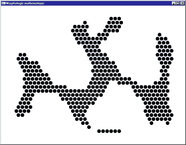
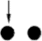
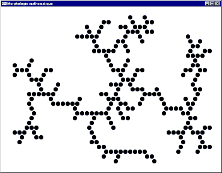

Le traitement d'images
FILTRAGE
SPECTRAL
Négation
Luminosité
Contraste
FILTRAGE
MATRICIEL
Filtres passe-bas
Filtres passe-haut
MORPHOLOGIE
MATHEMATIQUE
Dilatation
Erosion
Ouverture
Fermeture
Squelettisation
Dernière modification
11/09/09 14:16:59
On désigne par "technique de traitement d'images" toutes les techniques ayant pour but la modification des caractéristiques chromatiques des pixels des images bitmap.
Traitement d'images est souvent synonyme d'amélioration des images avec pour but l'obtention d'une plus grande lisibilité. Il n'y a pas création d'informations, mais mise en évidence de l'information pertinente déjà présente.
Image RVB : On appelle image RVB une image où chaque pixel est défini par trois valeurs de rouge de vert et de bleu. Les écrans 16 millions de couleurs sont des écrans RVB à 8 bits, soit 256 couleurs par teinte de base.
Image indexée : On appelle image indexée, une image où la teinte de chaque pixel est déterminée par une valeur d'indice à l'intérieur d'un tableau de teintes RVB (palette). La modification d'une entrée de la palette entraîne la modification de la couleur de tous les pixels référant à cette entrée. Les écrans 16, 256, 4096 couleurs sont des écrans indexés.
L.U.T.,C.L.U.T. : On appelle Look Up Table (L.U.T.) la palette de couleurs d'un écran à niveaux de gris. On appelle Color Look Up Table (C.L.U.T.) la palette de couleurs d'un écran couleur.
Pavage carré, pavage hexagonal : Les images sont habituellement plaquée sur des pavages régulier carré ou hexagonaux.
Opérations réalisées composante par composante sur les images:
-
addition : p(x,y) = p1(x,y)+p2(x,y) (seuillage à la valeur maximum)
-
soustraction : p(x,y) = p1(x,y)-p2(x,y) (seuillage à la valeur minimum)
Addition
Soustraction
Opérations réalisées bit par bit sur les images:
-
et : p(x,y) = p1(x,y) et p2(x,y) (&)
-
ou : p(x,y) = p1(x,y) ou p2(x,y) (|)
-
xor : p(x,y) = p1(x,y) xor p2(x,y) (^)
-
not : p(x,y) = not(p1(x,y)) (~)
|
|
||||||||||||||||||
|
|

Not

Et
Ou
Xor

Xor
On appelle spectre d'une image, la courbe de répartition des couleurs d'une image : niveau de gris en x, nombre de pixels en y.
Sur une image noir et blanc (à niveaux de gris), il existe un seul spectre. Sur une image en couleurs, on peut calculer un spectre par teinte de base ou utiliser la moyenne des trois composantes pour chaque pixel.
Exemples de spectre d'une image couleur
avec moyenne des composantes
Effectuer un filtrage spectral consiste à modifier, selon une fonction f(teinte), la teinte de chaque pixel de l'image de manière à modifier son spectre.
La teinte des pixels est modifiée de manière à être négativée.
Négation (Inversion du spectre)
La teinte des pixels est déplacée de manière à rapprocher, généralement dans les mêmes proportions, les composantes de vert, de rouge et de bleu du minimum (resp. du maximum) pour assombrir (resp. éclaircir) l'image.
Assombrissement (Tassement du spectre vers la gauche)
Eclaircissement (Tassement du spectre vers la droite)
Si on diminue le contraste, la teinte des pixels est déplacée pou rapprocher vers la teinte moyenne, et généralement dans les mêmes proportions, les composantes de vert, de rouge et de bleu.
Si on augmente le contraste, la teinte des pixels est déplacée pour rapprocher du maximum (resp. minimum), , généralement dans les mêmes proportions, les composantes de valeur supérieure (resp. inférieure) à la moyenne.
Diminution du contraste (Tassement du spectre vers le centre)

Augmentation du contraste (Tassement du spectre vers les bords)
Cette technique consiste à appliquer une matrice Mij (0 £ i < n, 0 £ j < m) à chaque pixel de l'image à transformer.
Soit une bitmap Byx (0 £ x < rx, 0 £ y < ry).
(0 £ y < ry-n+1, 0 £ x < rx-m+1)
Si la valeur obtenue est supérieure à la valeur limite, on seuille à cette valeur.
Si la valeur obtenue est inférieure à zéro, soit on seuille à zéro, soit on prend la valeur absolue.
Ces filtres ont généralement pour but de réduire les parasites (bruits de mesure). Ils agissent par moyenne sur un voisinage et suppriment donc les détails.
Filtres simples
| Carré | Octogonal | Hexagonal |
Filtres pondérés
Problème : On doit réaliser un compromis entre élimination du bruit et conservation des détails.
| Filtre |
Image n°1 |
Image n°2 |
|
- |
|
|
|
|
|
|
|
|
|
|
Filtres passe-haut
Ces filtres ont pour but d'augmenter le contraste et de mettre en évidence les contours.
On définit un contour comme une discontinuité locale de l'intensité lumineuse.
Les techniques permettant de détecter un contour sont basées sur l'utilisation:
-
de filtres gradients,
-
de filtres Laplaciens.
Les contours sont les lignes de maximum locaux pour les filtres de gradient.
Pour les filtres Laplaciens, les contours seront les suites de points à 0.
Filtres de gradients

|
||
| Croix | Prewitt | Sobel |
Extraction du gradient dans la direction de l'axe des x.
Filtres de gradients directionnel
Obtention des filtres par rotations successives de p/4.
| (1) | (2) | (3) |
Filtres Laplaciens
| Carré | Octogonal | Hexagonal |
Image initiale

Gradient en croix
Gradient de Prewitt
Gradient de Sobel
Gradient directionnel vertical
Gradient directionnel horizontal
Gradient directionnel diagonal
Ou de ces trois images
Laplacien carré

Laplacien octogonal
Image Initiale
Image après Laplacien
Renforcement
Un effet de renforcement des contours et donc des détails sur une image I est obtenu en retranchant à I le résultat de la réalisation d'un filtre Laplacien sur I:
I' = I - Lap(I).
Les algorithmes de morphologie mathématique permettent de travailler sur les images 1 bit (noir et blanc) pour mettre en évidence leurs propriétés particulières.
Dans les exemples donnés ici, on travaille sur des images plaquées sur pavage hexagonal.
Ces algorithmes sont basés sur l'utilisation d'"éléments structurants" (notés B), c'est à dire des configurations élémentaires de pixels à rechercher dans l'image.
: Pixel devant appartenir à l'image initiale.
: Pixel ne devant pas appartenir à l'image initiale.
: Pixel indifférent.
: Origine.
On note la transposée de B (symétrie par rapport à l'origine).
Pour chaque position de B sur l'image X, si un, au moins, des pixels de B fait partie de X, alors l'origine de B appartient à l'image générée.
Notation : Y = X B

Image initiale
Image après dilatation par
Pour chaque position de B sur l'image X, si tous les pixels de B font partie de X, alors l'origine de B appartient à l'image générée.
Notation : Y = X B.
Image initiale

Image après érosion par
Image après érosion par 
But : Isoler les surfaces présentes dans l'image, lisser les contours.
Y = XB = (X B) .
On réalise une érosion par B puis une dilatation par la transposée de B.
Image initiale
Image après ouverture par
But : Recoller des morceaux de surfaces proches de manière à fermer des contours disjoints, lisser les contours.
Y = XB = (X B) .
On réalise une dilatation par B puis une érosion par la transposée de B.
Image initiale
Image après fermeture par
(1) L'amincissement Y de X par l'élément structurant B est obtenu en retranchant à X le résultat de l'érosion de X par B.
Y = X O B = X / (X B).
(2) L'amincissement séquentiel de X par l'élément structurant B est défini comme :
X O {Bi} = [(X O B1) O B2] O B3…
Les Bi sont les éléments structurants obtenus par rotation de p/3 autour de l'origine pour un maillage hexagonal -> il y a 6 éléments structurants successifs.
| B1 | B2 | B3 |
L'amincissement séquentiel est une opération visant à retirer - sauf en certains points caractéristiques - une couche de pixels autour de l'image.
(3) La squelettisation d'une image est obtenue par réalisation itérative d'amincissements séquentiels jusqu'à idempotence (i.e. l'image n'est plus modifiée).
Un squelette d'une image X peut être obtenu par itération d'amincissements séquentiels selon l'élément structurant L :
Image initiale
Image après 5 itérations et idempotence
Image initiale
Image finale
Squelettisation par l'élément structurant
Image initiale
Image finale
Squelettisation par l'élément structurant
Image initiale

Image finale
Squelettisation par l'élément structurant
Un programme OpenGL
pour les opérations élémentaires
de morphologie mathématique